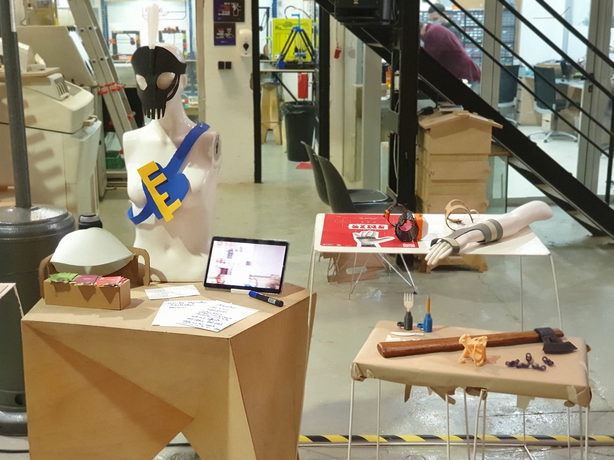
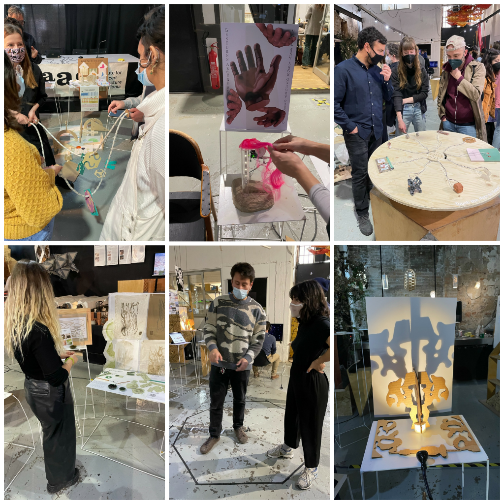

/design_dialogues_II
(03_april_2022)
Design Dialogues 2 has been an inflexion point regarding the topic I have chosen for my project.
It confirmed that what I'm doing is what I want to do, at least for the next two months. It has
been another chance of interacting with people, getting input and ideas from my classmates and
from external minds, and finding out the work everyone has been doing during this last trimester.
Again, I arrived at Design Dialogues with less strength than ever. The amount of work of this
trimester combined with emotional fragility due to personal reasons, and the incapability of having
a bit of time for myself and to reflect on what I want to do didn't help to prepare this exhibition
in a proper way. However, in the past weeks, I had returned to the wearables topic and started being
motivated again, after some weeks of desperation, uncertainty and lots of stress.

This time I wanted to show two main things: sensorial wearables and explorations with generative
and computational design. As you can see, both topics are quite far from the project I presented
during Design Dialogues 1, Plant B. This is the result of thinking and rethinking again about my
interests and what I want to learn with my project.
With Vikrant, we developed an intervention called Extended Organelles (you can find it HERE) that
helped us hypothesise about wearables and senses in different situations. We also developed a
bracelet that allowed us to transform colour into sound for the MICROCHALLENGE 2 of FabAcademy.
I presented both things and some other ideas and concepts of possible wearables to be.
Thanks to exhibiting this work, I was able to collect really interesting feedback from Kristina
Andersen and other people visiting our projects. Without any doubt, I will reflect on the ideas
they gave me and try to use them in my project and following iterations.
